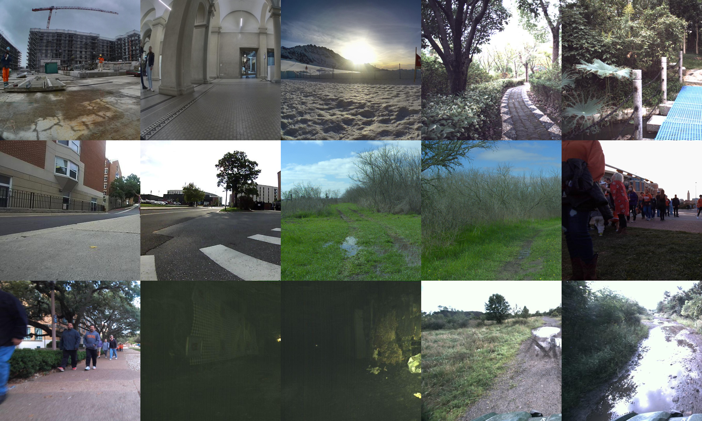

Learning based approaches have become ubiquitous across the computer vision community with new methods and approaches appearing at breath taking speed. While these approaches have made their way into the robotics community through various visual-navigation foundation models, the common impasse of data scarcity hinders more efficient cross-pollination between the robotics and learning disciplines. Robotics data are notoriously difficult and expensive to collect, have a wide-array of robotic specific problems, including extrinsic calibrations, and are generally captured with ROS, the esoteric, robotic operating system. While great strides have been taken to increase the quality and quantity of robotics data, the ROS platform and non-standardized cleaning methods make these data inacessible to the broader learning community. This work attempts to ameliorate the issue of non-standardized and robotic specific data issues for visual navigation by providing synchronized RGB-odometry pairs, along with platform specific metadata, circumventing the need for ROS and providing a repository of cleaned data and blueprint to clean future robotics datasets. To this end, we present Navigation Curation, a standardized and extensible data cleaning pipeline, visualization tools, and cleaned dataset repository with over 1.37 million paired image-odometry samples along with corresponding labels for visual navigation tasks with the goal to develop standardized methodologies to facilitate easier collaboration between the robotics and machine learning community, while providing an initial large-scale, high-quality dataset.